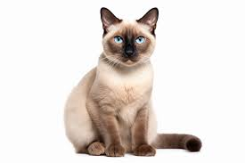
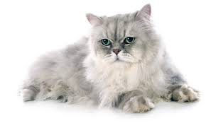
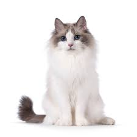

Siamês
Os gatos siameses são conhecidos por sua aparência distinta e personalidade sociável.
Saiba mais sobre os SiamesesPersa
Os gatos persas são famosos por seu pelo longo e macio.
Saiba mais sobre os PersasMaine Coon

Os Maine Coons são uma das maiores raças de gatos domésticos.
Saiba mais sobre os Maine CoonsRagdoll
Os gatos Ragdoll são conhecidos por sua docilidade.
Saiba mais sobre os Ragdolls